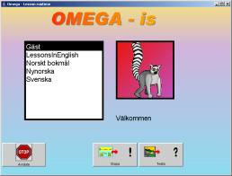
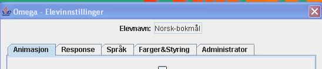
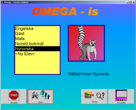
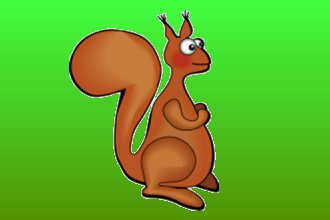

Omega-IS projektgrupp
Mikael Heimann, Mats Lundälv, Tomas Tjus & Keith E. Nelson
Omega - interaktiv språklek
Manual - leksjonsdel
Omega- is
version 1.2
ã Heimann, Lundälv, Tjus & Nelson, 2004-2006
Topic Dos Hb, Meloton Hb, Tomas Tjus Psykologbyrå & SuperImpact Images Inc.
Utvecklat i samarbete med Regionsenter for barn og unges psykiske helse – Helseregion Vest, Bergen; Psykologiska institutionen, Göteborgs universitet; DART, Sahlgrenska universitetssjukhuset, Göteborg; samt Department of Psychology, Penn State University, USA
Hvordan begynner man, og hva er et passende nivå?... 4
Eksempel på hvordan man kan arbeide med Omega-is... 13
Håntere elever og elevinnstillinger... 16
Kapittel G: Pedagogisk perspektiv... 69
MIR – noe om våre metoder... 69
Datamaskinen som språkstøtte... 70
Språkutvikling og samspill... 70
S.T.A.R.T – faktorene: Litt mer teori... 72
Omarbeiding (”recasting”) – hvordan gjør man?... 75
Kapittel A: Introduksjon
Omega-is er laget for å skulle stimulere språk- og kommunikasjonsutvikling hos elever som er i ferd med å oppdage skriftspråkets mysterier. Elever som lurer på hva bokstavene står for, og hvordan de kan representere ord og handlinger. Hensikten med Omega-is er at eleven, med støtte fra og i samspill med en lærer eller en forelder, skal utforske programmets språkmateriale. Dette språklige materialet med tilhørende animasjoner er ment å skulle motivere til lesetrening, og i tilegg byr det også på muligheter for samtale der elevens fantasi og tanker kan komme til uttrykk.
Programmet består av to hoveddeler (se figur 1). En leksjonsdel som innholder et språk- og tekstmateriale der eleven kan skape setninger ved hjelp av knapper med tekst på. I tilegg kan eleven teste sin egen forståelse ved først å se den hendelsen eller handlingen en setning uttrykker, og deretter kan eleven velge ord og skape en setningen som gjengir best det han elle hun nettopp har sett.
Figur 1: Leksjonsdelens innhold
I redigeringsdelen kan den voksne redigere det materialet som foreligger, eller skape helt nytt materiale for å oppnå en situasjon som er motiverende og best mulig tilpasset hver enkelt elev.
Oppbyggingen av dette multimediematerialet følger hele tiden den samme strukturen (se figur 2). Det språklige innholdet blir presentert ved hjelp av tekst, og etter at eleven har klikket på et ord får eleven høre ordet bli lest opp. Den ferdige setningens mening (eller ved ett-ordsøvelser det enkelte ords mening) blir vist som en animert hendelse eller handling. På denne måten får eleven – i ett tidsavgrenset vindu – støtte på tre ulike måter (tekst, tale, animasjon), noe som gjør det lettere å forstå hva språklig representasjon er.
Når en har startet programmet skriver eleven navnet sitt i navnelisten. Deretter kan eleven begynne å utforske språkmaterialet i "Skape", eller prøve leseforståelsen sin i "Teste".
Omega-is § Inneholder
et omfattende ferdig språkmateriale: § 29
grunnleksjoner med ca 200 ord (pluss 3 fortellinger og 16
demo-leksjoner) § tilstrekkelig
materiale for å lage 1936 setninger (pluss innholdet i
fortellinger og demo-leksjoner) § vanligste
nivå er 3-ord s-v-o-setninger § mest
avanserte nivå er lengre setninger og korte fortellinger § har
en åpen arkitektur § dvs
mulighet til å legge inn eget nytt språk- och
mediamateriale § tilleggsoppgaver
vil bli laget av utviklerne(via Omega-is nettsider)
www.omega-is.com),
men kan også legges inn av lærere eller foreldre.
Hvor mye har jeg lært, og hvor mye kunne jeg fra før? Dette kan en finne ut i programmets Fortest. Det betyr at en elev selv kan se hvor mye han eller hun kan før de begynner å arbeide med en leksjon. Men det gir også den voksne som arbeider sammen med eleven en mulighet til å få rede på hvilket nivå det er best å begynne på for eleven. En tommelfingerregel her er å ha 20 % korrekte svar som et utgangspunkt for at eleven kan en del fra før, men likevel vil får en utfordring i det å lære seg noe nytt. Dette prosenttallet må likevel sees på som et omtrentlig mål. Våre erfaringer er at det finnes noen elever som skårer veldig lavt på Fortesten (<20 %), men likevel lærer seg det leksjonen innholder. Det er viktig å finne en balanse mellom elevens glede ved å utforske materialet og materialets vanskelighetsgrad (er det for vanskelig fører det kanskje mer til frustrasjon).
Den sentrale delen i programmet er "Skape". Her kan elevene utforske programmet på en lekpreget måte, og gjennom det bli kjent med tekst og hva en kan bruke språket til. Språkmaterialets innhold er:
I B-leksjonene finnes det bare ett-ordsytringer. Her er hensikten at eleven her skal forstå at en tekst representerer en konkret hensikt, dvs. at dette materialet består bare av substantiv som representerer konkrete ting. I tilegg har disse leksjonene en så enkel struktur at også de elevene som har motoriske problemer med å håndtere en datamaskinen kan få et innblikk i hvordan en går fram for å illustrere tekst ved hjelp av et museklikk eller ved å merke teksten. Ordene er delvis valgt ut for å få fram fonologiske (lydmessige) og/eller ortografiske (bildemessige) forskjeller (f. eks. at noen ord ligner på hverandre slik som: "Hunden, Huset").
D-leksjonene består av to-ordssetninger med et substantiv og et verb. De skal illustrere at noen gjør noe, og hvordan enkle grammatiske setninger er bygd opp med subjekt og verbal.
F-leksjonene består av tre-ordssetninger med subjekt, verbal og direkte objekt. Noen ord som har vært med i de tidligere leksjonene blir gjentatt, men det er også nye ord slik at eleven kan får enda mer fonologisk trening. Noen ganger finnes ordene i en bestemt grammatisk form slik at subjekt-verbal-direkte objekt er plassert i bestemte kolonner. Andre ganger er det kun substantiv i en kolonne og verb i en annen. Men den setningen som blir skapt vil likevel alltid få en korrekt grammatikalsk struktur.
I H-leksjonene er de vanligste preposisjonene presentert slik at eleven skal kunne utforske det å plasserer ting i forhold til hverandre. I tillegg får de trene på genitivsformer i noen av leksjonene ved at eleven får utforske setninger som uttrykker eiendomsforhold (f. eks. "pandaens bord").
I J-leksjonene finnes det lengre setninger og flere nye ord er kommet til. Hensikten her er at eleven skal trene på å lese, og samtidig blir arbeidshukommelsen satt på prøve. Denne er viktig i forhold til det å lese og forstå en lengre tekst, og kan også prøves ut i testdelen hvis eleven synes det er morsomt med denne typen utfordringer.
I L-leksjonene kan eleven ved hjelp av ulike alternativer skape sine egne fortellinger, og velge forskjellige hovedpersoner og ulike scenarioer. Det kan være f. eks.: Hvor skal handlingen utspille seg? Hva leter hovedpersonen etter? Hvem kan hjelpe til? Hensikten med dette er å gi elevene en forståelse av hvordan en fortelling er bygd opp, og å stimulere elevenes egne skapende evner slik at de skal skrive selv når de ikke bruker dette programmet. Dessuten får elevene se de fortellingene de selv skaper utspilt i sin helhet som sammenhengende film!
Sett inn CD-en. Installasjoner for operativsystemene Windows (versjon 98 eller senere) og Linux/Unix finnes tilgjenglige på CD-en (en versjon for MacOS-X er under utvikling).
Installasjonsprogrammet foreslår hvilket system som er aktuelt. Start installasjonen og følg instruksjonen på skjermen. Du kan bl.a. velge hvilket språk eleven skal arbeide med.
Vær oppmerksom på at dette er en omfattende installasjon som krever en del tid! Regn med 5–15 minutter til installasjonen.
Programmet krever nærmare 180 MB ledig plass på haddisken med et språk installert. Hvert språk utover dette krever 10 - 15 MB i tillegg.
Datamaskinen bør minst være av typen Pentium 3, 600 MHz, med 256 MB RAM-minne. Vi anbefaler Pentium 4, >800 MHz og 512 MB RAM-minne.
Etter avsluttet installasjon vil du finne disse ikoner på startmenyen:

Ikonene avspeiler det faktum at Omega-is egentlig består av tre forskjellige programmer. To av disse (Animasjon Editor og Lesson Editor) gir deg muligheter til at du selv kan redigere og utvikle programmet. Du kan f. eks. forandre på de leksjonene som allerede finnes eller skape helt nye. Du finner mer om dette senere i manualen og på vår nettside: www.omega-is.com
Ikon nummer tre (Omega-is) utgjør det egentlige programmet, det som gir elevene muligheter til å utforske språket på en lekende måte, og deg som lærer eller forelder et nytt pedagogisk verktøy.
Omega-is finnes hittil med grensesnittet i tre språkversjoner (svensk, norsk och engelsk), og med leksjonsmateriell i fem språkversjoner (svensk, norsk bokmål, nynorsk, bergensk og engelsk). Når programmet startes fra noen av de tre startikonene velges den språkversjonen som stemmer med systemets innstillinger– hvis det finnes– ellers velges den engelska versjonen. Man kan velge en spesiell språkversjon fra mappen”Language Specific Shortcuts” i startmenyen. De leksjonspråkene som er innstallert kan kjøres fra alle grensesnittspråk, d.v.s. at leksjonene kan kjøres på engelsk i den norske grensesnittversjonen, dersom engelsk er installert..
|
En hurtigstart: · Dobbeltklikk på Omega ikonet. · Velg”Gjest” · Velg ”Lage” eller ”Teste” · Velg leksjon
|
 |
Når programmet starter får en automatisk elevstatus, noe som gir eleven mulighet til å begynne å undersøke programmets innhold (Skape) eller teste sin egen forståelse (Teste). Kjører en programmet som "Gjest" blir ikke det en gjør lagret i en spesiell resultatmappe for elever, men i gjestens/gjestenes fellesmappe.
Velger en Skape får en mulighet til å undersøke språket på en lekpreget måte, helt fra enkeltstående ord (B-leksjonene) til korte fortellinger (L-leksjonene). På dette nivået velger en først et språkmateriale som deretter blir gjengitt i form av tekst og lyd, og som animasjon. Eleven skaper animasjoner som stimulerer språkforståelsen og motiverer til samtale og utvikling.
Velger en i stedet Teste får en mulighet til å undersøke sin språkforståelse på en lekepreget måte. Nå blir animasjonen vist først og deretter skal eleven velge de ordene eller den setningen som beskriver best det han eller hun nettopp fikk se. (Se kapittel B).
Teste kan kjøres på to nivåer: Enten i et elevnivå der en kan teste sin leseforståelse, oftest etter at tilsvarende ord og setninger først er utforsket på Skape-nivået. Eller en kan kjøre Teste i mer kontrollerte former på lærernivået, med ord som har til hensikt å utrede elevens leseforståelse ytterligere. (en kommer til lærernivået og innstillinger ved å bruke kommandoen Ctrl+F2).
I begge tilfeller blir resultatene automatisk lagret i en resultatfil for hver enkelt elev. For mange elever kan det være morsomt å utrede seg selv gjennom å ta den samme testen for å se om de får flere rette enn forrige gang, eller om de beholder samme antall rette svar, men greier å svare enda raskere. (Mer om tester og resultater i kapittel C: Teste.)
Våre erfaringer er at elevene lærer mest hvis det er en voksen i nærheten som kan gi dem positiv støtte når det trengs, og som også kan være en diskusjonspartner når elevene vil prate om det som de opplever. Det er likevel viktig at det er elevene som skal ta initiativ til å utforske språkmaterialet, det er elevenes egen nysgjerrighet og lyst som skal være drivkraften! (Se mer om dette i kapittel F )
Programmet styres enten via mus eller via tastatur (t ex mellomrom og enter). Dette gjør at programmet også kan styres med 1 eller 2 brytere
Målet med Omega-is har vært å skape ett multimediebasert dataverktøy som plasserer elevene i førersetet, og gir dem muligheter til å utforske språket på en lekpreget måte. Det er dette som er selve grunnideen. Elevene får muligheter til å undersøke alt fra enkeltord og setninger av varierende lengde, til korte fortellinger. Dette språklige materialet blir gjengitt i tekst og lyd, og som animasjon. Elevene skaper selv illustrerte setninger som stimulerer språkforståelsen, og motiverer til videre samtale og utvikling .
En velger vanskelighetsgrad (B, D, F, H, J eller L-leksjoner) ved å klikke på et dyreikon
Hvis en ønsker å legge til en ny elev eller forandre programmets grunninnstillinger, må en først gå til programmets lærernivå ved hjelp av kommandoen Ctrl+F2 (se figuren nedenfor). Fra dette nivået kommer en til programmets innstillingsfunksjoner, til en spesiell lærertest og til testresultater (se mer om dette i kapittel C). For å registrere en ny elev, velg <Ny Elev>, se bilde (1) nedenfor, og skriv inn elevens navn. Deretter kommer en til en ny dialogboks som gir muligheter for flere innstillinger, se bildet (2) nedenfor.
|
(1) |
|
|
(2) |
 |
Animasjon og Feedback gir muligheter for å velge hastighet på animasjonene og eventuelle gjentagelser av disse, og mulighet for å justere feedback på testøvelsene. Det er mer om dette i kapittel C.
Språk: Her kan en velge det språket som eleven skal arbeide med. De valgene en kan gjøre her har sammenheng med hvilke språk som er installert (De språkene som er tilgjengelige valg på installasjons-CD-en er engelsk (britisk), svensk og norsk (bokmål eller nynorsk)).
Farger og styreinnstillinger: Her er det mulig å stille inn farger og kontraster på knappene, teksten, bakgrunnen og skjermbildet. Det betyr at hver elev kan sette sitt eget preg på hvordan programmet ser ut. Dessuten har en her også muligheter for å stille inn mer detaljert hvordan en vil styre programmet med tastaturet. Normal innstilling er at Tabulator/Mellomrom betyr at en flytter et trinn fram og at Enter betyr å velge.
Administrasjon: Her kan en legge inn en lenke til et bilde av eleven. Dette bildet blir deretter vist hver gang eleven begynner å arbeide med programmet. Under "Admin" har en også muligheter til å slette elever som er lagt inn, og elevinnstillinger (lagrede elevdata må slettes manuelt via filsystemet).
Etter at registreringen er avsluttet og eventuelle justeringer av innstillingene er gjort, kan eleven begynne å skape sine egne setninger. Bruk kommandoen Ctrl+F2 for å komme tilbake til elevnivå, og velg lage setninger.
Programmet innholder et stort antall ferdige leksjoner som gir eleven muligheter for å undersøke språk og skrevet tekst ut fra sine egne forutsetninger.
B-leksjonene utgjør det første og enklest nivået. Her er det bare enkeltstående ord som blir undersøkt, dvs. at eleven ved å klikke på ordbildene får se ordet som tekst, får høre det uttalt og får se ordet visualisert. Det finnes fire ferdige B-leksjoner som tilsammen innholder 29 forskjellige ord.
|
|
|
|
De fire B-leksjonene som inngår |
Ord som inngår i leksjon B1 |
D-leksjoner. Her kan en kombinere to ord, en aktør pluss en handling/et verb. Eksempel på handlinger som kan skapes er "Jenta husker" eller "Ekornet danser". Det finnes tre leksjoner (D1, D2 og D3) som totalt gir muligheter for å skape 81 ulike setninger/handlinger.
F-leksjoner. F-leksjonene gir muligheter for å skrive treordssetninger som består av en aktør/et subjekt (et substantiv), en handling (et verb) og et direkte objekt (et nytt substantiv) (s-v-do). De første setningene innholder bare to substantiv og et verb, noe som gir eleven mulighet for å lære seg hvordan F-leksjonen fungerer uten altfor mange forstyrrende alternativ. Det finnes til sammen 12 ulike F-leksjoner som tilsammen gir muligheter for å skape 205 ulike språklige hendelser/handlinger.
H-leksjoner. H-leksjonene innholder fem leksjoner der en kan trene på preposisjoner og posisjonsbestemmelse. På dette nivået kan en også undersøke retningsbestemmelse, f. eks. slik som: "titter ut fra", "titter inn gjennom" og "hopper ned fra". En kan også trene på genitiv i noen av H-leksjonene ved at eleven får utforske setninger som uttrykker et eiendomsforhold (se f. eks. "pandaens bord"). Setningene er nå vesentlig lengre og mer komplekse, og det blir stilt større krav til elevens språkforståelse, motivasjon og arbeidshukommelse. I H-leksjonene kan det til sammen skapes 951 setninger som yttrykker en hendelse eller en handling.
J-leksjoner. J-leksjonene innholder fem leksjoner som omfatter blant annet adjektiv og konjunksjoner. Setningene er nå delt opp i tekstknapper (se figuren nedenfor), noe som gir mange kombinasjonsmuligheter, og eleven nærmer seg nå "vanlig" skriving. Hensikten her er å trene evnen til å utforske et større språkmateriale, noe som forhåpentligvis skal føre fram til det å kunne lage fortellinger (L-leksjoner). Videre får eleven her mulighet til å arbeide med setninger der aktørene også uttrykker og viser følelser ("den glade" og "den redde"). J-leksjonene innebærer enda mer trening av arbeidsminnet, fordi det her er en større informasjonsmengde som skal bearbeides. Totalt kan det skapes 699 setninger/handlinger av de ulike J-leksjonene.
Eksempel på komplekse setninger på J-nivået (J3)
L-leksjoner. Her finnes det to leksjoner der eleven kan skape en lengre fortelling ved hjelp av å kombinere setninger. I setningene er det muligheter for å bestemme hvem som skal være hovedaktør, hva denne skal gjøre og i hvilken sammenheng. Eleven kan da utforme ulike versjoner av den samme grunnfortellingen. Hensikten er å stimulere elevens fantasi og evne til å lage egne fortellinger! Den fortellingen eleven lager kan leses opp og/eller spilles av flere ganger, og den kan skrives ut. Den kan også lagres slik at en kan ta den fram igjen senere.
I sin nåværende utformning gir Omega-is muligheter for å arbeide med fire ulike språk: svensk, norsk, (bokmål og nynorsk) og britisk engelsk. En kan velge å installeres noen av disse fire språkene eller alle sammen. Om en velger å installere flere enn ett språk, velges språk i innstillingsmenyen (bruk kommando Ctrl+F2 for å komme til lærernivået). Disse innstillingene kan gjøres for hver enkelt elev. På denne måten kan en elev arbeide med Omega-is-øvelser i f. eks. både en norsk og en engelsk versjon.
Totalt innholder grunnmaterialet i leksjonene B1 til J5 147 forskjellige ord. I tillegg kommer de ordene som inngår i fortellingene i L-leksjonene og de som inngår i de tilsvarende demo-leksjonene. Mer spesifikt innholder programmet 33 ulike verb, 81 substantiv, 14 preposisjoner (f. eks. bakom, ved siden av, over, på, under, framfor, gjennom, i), 12 adjektiv (f. eks. blond, rødhåret, liten), 2 adverb (langsom, rask), en konjunksjon (og), to bestemte artikler (den, det), ett pronomen (seg) og en ubestemt artikkel (en).
Språkmaterialet gir muligheter for til sammen å skape 1936 setninger/handlinger i tillegg til de mulighetene som L-leksjonene og demo-leksjonene gir.
La oss gå ut fra følgende scenario: En elev, Jan, som har en forstyrrelse i autismespekteret, skal prøve programmet. Jan har vist interesse for ord, og lærerne hans har vurdert det slik at kan det være verd å prøve Omega-is. Jans språklige alder er vurdert til å være ca 5-6 år.
Trinn for å komme igjang:
1. Start programmet
2. Kommandoen Ctrl+F2 for å komme til innstillinger/lærernivå
3. Velg <Ny Elev> og skriv inn elevens navn. Deretter kan man velge:
· Animasjon: Velg om animasjonen skal repeteres, om avsluttet setning skal markeres med en lyd, og still inn hastigheten på animasjonen.
· Feedback: I testdelen kan en stille inn hvilken type feedback eleven skal få når han/hun svarer riktig eller feil.. Feedback kan markeres i form av lyder, tekst, animasjoner eller filmsnutter. Her kan en også stille inn hvor ofte en skal gi feedback.
· Språk: Velg språk: svensk, norsk (bokmål, nynorsk, bergensk) eller britisk engelsk. Valgene har sammenheng med hva som er installert.
· Farger & Styring. Her kan en justere fargesettingen og på den måten skape en opplevelse av at hver enkelt elev har et unikt miljø. En kan også stille inn hvordan en vil styre programmet ved hjelp av tastaturet. Det normale er Tabulator/Mellomrom for å flytte ett trinn, og Enter for å velge.
· Admin. Her kan læreren legge til en lenke til et bilde av eleven, eller alternativt slette innlagte elever og elevinnstillinger.
4. Etter å ha gjort innstillingen, går man tilbake til lærernivå. Nå kan en velge mellom å teste eller å gå rett på leksjonsdelen. I Jans tilfelle valgte læreren å bli værende på lærernivået for å teste eleven på to-ordsnivået (D-leksjoner) ved å klikke på Teste og velge en fortest (pretest).
5. Jan gjennomførte pretest 1 for leksjon D1. Resultatet ble to rette setninger av 9 (det utgjør 22,2 % riktige svar, noe som også blir lagret i resultatfilen som en kommer til via knappen Resultat).
6. Det er nå tid for at Jan selv skal få prøve ut programmet. Ved hjelp av kommandoen Ctrl+F2 kommer en tilbake til elevnivået.
· (Legg merke til at det også her finnes testmuligheter. Testene i leksjondelen varierer, men testene på lærernivået innholder alltid et på forhånd bestemt antall setninger. Ettertesten på lærernivået, dvs. posttestene, innholder også såkalte "dummyord", dvs. ord som fonologisk eller semantisk ligner på de ordene som blir testet).
7. Jan får arbeide med D-leksjonene.
8. Etter at Jan har arbeidet seg igjennom alle de tre D-leksjonene, og til og med har prøvd de testene som finnes i leksjonsdelen, velger læreren igjen å teste Jan med den testen som et laget på forhånd. Ved å bruke Ctrl+F2 kommer en nå tilbake til lærernivå.
Jan gjennomfører posttest 1 (ettertest 1) og får nå 80 % korrekte svar. Deretter avsluttes programmet.

Testfunksjonen i Omega-is gir muligheter for å prøve hvor mye et barn forstår av språkmaterialet i en gitt leksjon. Eleven får først se en animasjon og skal deretter ved hjelp av å klikke på tekstknappene, skape en setning som gjengir den hendelsen som animasjonen viste. Testen kan kjøres på to nivåer, på lærernivå og på et mer fritt elevnivå. På lærernivået er innholdet definert på forhånd, mens testene på elevnivået gjenereres mer tilfeldig. Dessuten finnes det på lærernivået både en fortest og en ettertest for å måle og analysere effekten på språk- og lesforståelsen, etter at språkmaterialet er blitt utforsket.
Her kan eleven på en lekpreget måte utfordre sine evner til å uttrykke/gjenskape animerte scener ved hjelp av tekst. Ved hjelp av å observere de resultatene eleven oppnår i disse øvelsene, kan læreren også få en oppfatning av hvilket nivå som det passer for eleven å arbeide med. I testene på elevnivå finnes eksakt samme språkmateriale som i Skape-leksjonene, men øvelsene kommer fram i tilfeldig rekkefølge i de respektive leksjonene. Om eleven ikke klarer mer enn ca 20-30 % av setningene er det et tegn på at det kan være meningsfullt å undersøke materialet i leksjonen (se også side 2). Dette tipset gir vi ut fra våre erfaringer, men den endelige avgjørelsen kan bare den læreren/forelderen som kjenner eleven ta, da elevers behov når det gjelder trygghet og utfordringer varierer mye.
"Resultatene" på Teste-øvelsene blir (på samme måte som aktivitetene i Skape-øvelsene) lagret og kan analyseras av læreren senere. Se mer om resultathåndtering, og om tester på lærernivået i avsnittet nedenfor.
For å komme til testene på lærernivå, trykk Ctrl+F2. Klikk deretter på Teste. På lærernivået er det muligheter for å gjøre to fortester og to ettertester. Disse testene innholder mer detaljert informasjon om elevenes resultater i forhold til testene på elevnivået. Dessuten er det her lagt inn alternative ord som skal utfordre elevens leseforståelse. Det er ord som er semantisk like, dvs. innholdsmessig like (slik som f. eks. 'bil/buss') og ord som er fonologisk like, dvs lydmessig like (slik som f. eks. 'bi/bil').
Før en begynner en test på lærernivået må en registrere elevens navn og gjøre noen andre nødvendige innstillinger (se neste avsnitt)
På det såkalte lærernivået (kommando Ctrl+F2) kommer en til programmets innstillingsfunksjoner, lærertestene og testresultatene. Her kan en legge til en ny elev eller forandre de grunninnstillingene som inngår i programmet (se også kapittel B). For å registrere en ny elev velg (1) <Ny elev> og skriv inn elevens navn. Deretter kommer en til en ny dialogboks (2).
|
(1) |
|
|
(2) |
|
Animasjon. Det er mulig å velge animasjonshastighet. Ved å klikke på skyveknappen kan en regulere hastigheten mellom langsom – normal – hurtig. Dessuen kan en velge om animasjonen skal vises to ganger, om en skal høre et lydsignal før og etter animasjonen og etter fullstendig setning. En kan også velge om setningen skal vises som tekst etter animasjonen for ytterligere å forsterke innholdet i animasjonen.
Feedback. Når en tester leseforståelsen kan en velge ulike former for feedback (tilbakemelding) som viser om svaret er riktig eller feil. En tilbakemelding kan bestå av både tekst, lyd, bilder og filmsekvenser. Det er mulig å velge hvilke av de filmene, bildene og lydene som følger med programmet som skal vises eller spilles. En kan også stille inn tilbakemelingsfrekvensen ved hjelp av en skyveknapp.
Gjennom "Velg…"- knappene kan en også komme til egne filer. Det innebærer at en kan anvende helt spesielle lyder, bilder eller filmsekvenser som feedback. Det betyr enda en mulighet for individuelle tilpasninger.
Språk. Her kan en velge det språket som eleven skal arbeide med. Hvilke valg en har her henger sammen med hvilke språk som er installert (tilgjengelige valg på installasjons CD-en for Omega-is 1.0 er: engelsk (britisk), svensk og norsk (bokmål og nynorsk).
Farger og styreinnstillinger. Her er det mulig å stille inn farger og kontraster, og hvordan knappene, teksten og bakgrunnen på de forskjellige skjermbildene skal se ut. Det betyr at hver elev kan velge sine egne farger på programmet.
|
|
|
|
|
|
Fargeteme - Grunntema |
Tema 1 (opsjon 1) |
Tema 2 (opsjon 2) |
Tema 3 (opsjon 3) |
|
|
|
|
 |
|
Tema 4 (opsjon 4) |
Tema 5 (opsjon 5) |
Tema 6 (opsjon 6) |
Ex eget tema (user defined) |
Bildene ovenfor viser eksempel på grunninnstillinger ("Fargetema") som kan velges og hvordan en egendefinert fargesetting kan se ut. Det finnes fire ulike innstillingsmuligheter for å forandre på fargeinnstillingene under "Forandre farge". Her kan en justere utseendet ved oppstart, når en velger leksjon og når en skal lage setninger og fortellinger osv.
Under "Farger og styreinnstillinger" kan en også velge å stille inn hvordan en vil bruke "Mellomromstasten". Det er to alternativer: "velg neste" eller "aktiver valgte". Det første alternativet innebærer at du "hopper" ved hjelp av "Tabulatortasten" og "Mellomromstasten", og at du aktiverer ved å trykke"Enter". Det andre alternativet er at du hopper med "Tabulatortasten", og aktiverer ved å bruke "Mellomrom" og "Enter".
Administrasjon. Her kan en legge inn en lenke til et bilde av eleven ("Velg elevbilde…"). Bildet må være i JPG-format! Deretter vises bildet hver gang eleven logger seg på og begynner å arbeide med programmet. Under "Administrasjon" har en også mulighet for å ta bort (slette) registrerte elever.
Etter avsluttet registrering og eventuelle justeringer av innstillingene kan eleven begynne å skape egne setninger. Benytt kommando Ctrl+F2 igjen for å komme tilbake til elevnivå og skape setninger.
Om den voksne vil studere elevens resultater kan en gjøre dette fra det såkalte lærernivået: Trykk Ctrl+F2 når du står i startmenyen. Klikk deretter på knappen Resultat. Det som vises først er en oversikt over de testene som den aktuelle eleven har gjort, og med en del informasjon om hvilke tester det er, hvor lang tid de tok, hvilken dato svarene ble gitt m.m. (se bildet under).
Resultat: Nivå 1for test
Hvis en ønsker enda mer detaljert informasjon (f. eks. i forhold til hvilken type grammatiske feil eleven gjør) klikker en på knappen "Detaljer". Foruten prosenttall for hvor mange ord og setninger som er korrekte, vises også eksakt hvilke setninger som er blitt testet og hva barnet har svart (se bildet under). Vi kan lese ut av bildet at eleven svarer helt korrekt på de to første setningene, men gjør feil når det gjelder det direkte objektet i den tredje setningen. Dessuten er svarstiden for hvert enkelt ord oppgitt.
Resultat: Nivå 2 for test
Legg merke til at resultatfunksjonen i Omega-is også gir muligheter for å se hva eleven har gjort på Skape-nivået. Marker "Skape" under "Velg type" (se bildet som viser Resultat: Nivå 1).
Ved å analysere resultatene i detalj kan foreldren eller læreren se om eleven forbedrer sin leseforståelse og om dette skjer raskere, og i tillegg kan de se om det er noen ord i setningene som er enklere eller vanskeligere å lese. På denne måten blir det mulig å sytematisk undersøke eventuelle vanskeligheter og om disse kan være relaterte til at det er bestemte ordklasser som er vanskelige for eleven. For eksempel ble det i en studie oppdaget at barn med autisme hadde størst problemer med objektsformene, noe som igjen kan danne grunnlag for videre trening eller undersøkinger (Tjus og Strid, 2000). Lærere har også rapportert at noen elever faktisk bruker lengre tid på å svare, men at de også har flere korrekte svar, noe som tyder på at de har blitt mer nøyaktige. Andre barn svarer både raskere og med økt sikkerhet (Tjus m.fl., 1998). Tolkningen av resultatene er likevel helt avhengig av kunnskap om hvordan den enkelte elev fungerer, og da er ofte en visuell obersasjon tilstrekkelig.
For de som vil gjøre grundigere studier av barns testresultater, slik som i eksemplet over, er det mulig å eksportere resultatene til Excel eller andre kalkyle- eller statistikkprogrammer for videre statistisk bearbeiding. Hvis en klikker på knappen merket ’Som fil…’ og ’Eksporter’, åpes en dialogboks der en kan gi filen et navn og velge hvor en vil ha den lagret. Deretter kan filen åpnes og importeres som tekstfil fra Excel eller et tilsvarende program.
Kapittel G: Pedagogisk perspektiv
De tre bokstavene M+I+R samenfatter på flere måter og for en stor del den arbeidsmåten som har vist seg å gi størst framgang. M står for "Multimedia" og sammenfatter de potentialer og muligheter som teknologien gir oss; I står for "Interaksjon" og undestreker hvor viktig det er at en voksen samtalespartner er til stede så mye som mulig; R står for "recasting" (omforming) og innebærere at en bruker en spesiell samtalesstrategi.
Siden 1990 har det blitt gjort flere studier ved Gøteborgs universitet for å undersøke hvordan multimediabaserte metoder kan hjelpe elever med forskjellige språkvansker med å utvikle språket sitt (Tjus, 1998). Den metoden (MIR-metoden) vi har brukt er basert på tre likeverdige moment:
1. Multimedia. Vi har i vår forskning operert med tre ulike programmer, og Omega-is er det nyeste og mest fullstendige av disse. Alle har likevel vært bygget på omtrent de samme prinsippene. Dette er programmer som gir elevene muligheter for, på en enkel måte, å skape motiverende og interessante handlinger/hendelser på skjermen.
2. Interaksjon: Selv om eleven sitter ved en datamaskin er samspillet med læreren fremdeles sentralt. Det som skjer på skjermen gir læreren og eleven noe å snakke om. Den voksne skal imidlertid styre så lite som mulig, men i stedet fungere mer som en støtte og inspirasjonskilde for eleven.
3. ”Recasting” (Att omforma): Dette er en kjent, men undervurdert, metode som altfor sjelden blir brukt på en gjennomtenkt måte. Flere forskere (se Tjus, 1998 for en detaljert gjennomgang) har vist at elever lærer seg nye språklige begreper raskere om den voksne omformer det eleven sier. Det er i seg selv en ganske enkel framgangsmåte: En forandrer den språklige formen uten å forandre kjerneinnholdet i det eleven har sagt. Erfaringen viser at teknikken ofte har flere fordeler enn bare det å gjenta etter eleven. En oppnår samme fokus på det eleven har sagt, en tilpasser seg til elevens tempo og nivå, i tillegg til at dialogen blir mer variert og naturlig. Resultatene fra flere studier er entydige og viser at en dialog basert på disse prinsippene kan ha en tydelig positiv effekt på den språklige utviklingen (se videre sidene 60-61 og litteraturlisten).
Denne metoden ble utprøvd i flere prosjekter i Sverige på 1990-tallet, og med flere forskjellige grupper av elever (f. eks. elever med autisme, multifunksjonshemmede og elever med dysleksi), og resultatene hittil har vært positive. De fleste elevene, og dette gjelder i framfor alt den gruppen barn som har autisme, forbedrer sin leseforståelse og sine kommunikative ferdigheter eller sin språklige bevissthet (Heimann, Nelson, Tjus og Gillberg, 1995; Tjus m fl, 2001).
Utifrån dagens forskningsbaserade kunskap inom pedagogik, psykologi och lingvistik är det möjligt att sammanställa ett antal förutsättningar som starkt påverkar barns normala språkutveckling (se Heimann & Tjus, 1997). Dessa förutsättningar kan, lite förenklat, delas in i tre grupper: Nödvändiga, underlättande samt grundläggande faktorer.
För vart och ett av dessa tre områden ges nedan exempel på några av de viktigaste faktorerna. För de grundläggande faktorerna gäller att de alla bidrar till att utveckla barnets motivation och vilja till kommunikation, en kompetens som tar ett avgörande språng framåt när barnet mot slutet av det första levnadsåret träder in i det talade språkets värld. Avseende de nödvändiga faktorerna måste samtliga finnas till hands för att språket skall utvecklas på ett normalt sätt, medan det för de underlättande faktorerna gäller att ju fler som finns tillgängliga, desto bättre!
De fleste grunnleggende faktorene som blir diskutert her, er hentet fra vår kunnskap om spedbarnets utvikling. I dag vet vi at begynnelsen til vår kommunikasjons- og språkforståelse finnes allerede ved fødelsen. Det som skjer i løpet av det første leveåret får med andre ord konsekvenser for det lille barnets språkutvikling. Tidlig kompetanse som en antar er viktig for den språklige utviklingen er (Heimann og Tjus, 1997: 56-57):
Imitasjon. Spedbarn hermer ansiktsuttrykk (f. eks. et smilende ansikt eller et trist ansikt) og grimaser (f. eks. det å åpne munnen eller det å rekke ut tungen) allerede ved fødelsen.
Mammas stemme. Spedbarnet kjenner sin mammas stemme allerede før fødelsen. Barnet kan også kjenne igjen eventyr og regler som mamma har fortalt til "barnet" i løpet av de tre siste månedene av graviditeten.
Sugeevne. Hvordan barnet suger har sammenheng med hvor sultent barnet er. Når barnet ligger ved mammas bryst suger de fleste barn i et mønster som består av vekselvis intensive sugeperioder og pauser. Mødre anvender spontant og intuitivt dette mønsteret til å utvikle barns forståelse av turtaking ved at de ofte snakker med barnet bare i disse pausene.
Turtaking. Det vesle barnet synes å ha en helt innebygd evne til å ta tur når det "snakker" med den voksne. Om mamma eller pappa bare gir sin baby tid, og et spedbarn har behov for litt lengre tid for å svare, så kan det i blant utvikle seg lange dialoger. Slike dialoger kan en også observere mellom fortidligfødte barn og deres foreldre.
Konsekvent samspill over tid. For det lille barnet er det viktig at det i løpet av det første leveåret får muligheter til kontinuerlig og konsekvent å utvikle sin evne til samspill og kommunikasjon.
Øyekontakt. Den grunnleggende evnen til øyekontakt finnes allerede ved fødelsen, men den blir også utviklet raskt i løpet av de første månedene. Øyekontakten er en enormt viktig del av den tidlige kontakten og det tidlige samspillet mellom spedbarnet og dets foreldre.
Trygge relasjoner. Våre første erfaringer med hvor viktig det er å kommunisere, og våre første erfaringer med hvor viktige vi er i omverdens øyne får vi gjennom de første relasjonene til andre. Grunnlaget for dette blir lagt i løpet av det første leveåret.
Felles oppmerksomhet. Rundt 8-9 månedersalderen kan en se at barns evne til felles oppmerksomhet begynner å vise seg (f. eks. når det 9- måneder gamle barnet og mamma leker med en leke og vekselvis ser på hverandre og på leken). Dette er også koblet til tidlig kommunikative gester (f. eks. å peke for å vise til noe) og har vist seg å være en helt grunnleggende forutsetning for senere språklig og kognitiv utvikling.
Eksemplene er hentet fra Heimann og Tjus (1997: 57-59):
En samspillspartner. Samspillsepisoder med en partner, og at denne personen også har en klart høyere språklig kompetanse enn det barnet har selv.
Et tilstrekkelig antall repetisjoner. Barnet må få et tilstrekkelig antall muligheter til samspill og samtale med andre som har et språk som er både flytende og variert.
En motiverende samtale. Samspill og samtale som er motiverende og sosialt interessante for barnet, og der barnet får muligheter til å delta ut fra sine egne forutsetninger.
Å ta i bruk de evnene barnet har. At barnet f. eks. får muligheter til å ta i bruk sine biologisk intakte sanser i sin kommunikasjon. Ett eksempel på dette kan være at døve barn får muligheter til å kommunisere ved hjelp av tegn.
Å prøve ut grenser. At barnet noen ganger får erfaringer med kommunikasjon som går ut over grensene for hva det selv er i stand til.
Här ges ett par exempel på underlättande faktorer. En utförligare lista står att finna i Heimann & Tjus (1997; sid 59-61)
· Mange modaliteter. Å få språklige stimulanser og erfaringer gjennom så mange modaliteter eller former som mulig (f. eks. tale, tekst og tegnspråk). Å få se en tekst og samtidig få høre den, og i tillegg få den oversatt til tegnspråk gir barnet flere muligheter for å forstå og analysere det språklige innholdet.
· Mange utfordringer. Samtaler som ofte utfordrer barnets språklige forståelse og utviklingsnivå gir barnet ekstra stimulanse og muligheter for å oppdage både nye språklige strukturer og nye måter å føre en samtale på. En gruppe barn som virkelig riskerer å ikke bli tatt på alvor når det gjelder språk er barn som er multifunksjonshemmede og som kanskje bare kan uttrykke sine egne tanker ved hjelp av datamaskin eller en såkalt BLISS-tavle (med tegn og symboler). Dette fører ofte til en langsom samtalesprosess med korte, presise meldinger. Dessverre er det av og til slik at de hindringene som de motorisk funksjonshemmede møter i forhold til datamaskinen eller BLISS-tavlens begrensninger blir oppfattet som bevis på at barnet heller ikke forstår mer enn det som det er i stand til å uttrykke.
· Fleksibel tilpassing. Den eller de som snakker med barnet benytter flere ulike metoder for å gjøre begrep og hendelser forståelige. Meningen er at den voksne skal tilpasse både taletempoet og språkets kompleksitet til barnets motivasjon, konsentrasjon og forståelse i hvert enkelt tilfelle, og også at en anvender ulike måter for å gjøre informasjonen overtydlig. Det kan innebære at en beskriver samme hendelse på flere måter eller at en også tar i bruk andre uttrykksformer (som å tegne eller synge) for å øke barnets muligheter for å forstå.
· Individuell anerkjennelse. At det språket som de signifikante voksne i barnets omgivelser bruker er tilpasset til barnets personlighet, dets måte å tenke på (kognisjon) og dets sosiale væremåte. Dette er viktig fordi det bekrefter barnet som et egen individ med egne unike interesser og behov. Selv om en ved å studere den litteraturen som finnes kan lære seg mye om hvordan en kan snakke med barn med autisme, må en aldri glemme at det ikke finnes bare en riktig måte å være sammen med barn som har fått denne diagnosen. Disse barna er like forskjellige som normale barn, og som barn med andre funksjonshemminger, og må bli møtt som de unike individene de er.
Heimann og Tjus (1997) mener at om så mange som mulig av de faktorene som vi har listet opp over er tilstede, vil det øke sannsynligheten for at eleven skal komme i en fordelaktig innlærningssituasjon der barnets hjerne/kognitive system får mulighet til å registrere og analysere viktig informasjon. Eleven har dermed større sjanse til å faktisk lære seg noe nytt, slik som f. eks. en språklig form som det ikke har behersket tidligere. Heimann og Tjus skriver (1997: 60-61):
Ett barn får inte ses enbart som en biologisk datamaskin som skall förses med viss information. Barnet är en hel människa som har mänskliga behov! Inlärning sker således inte bara i skolan och sker heller inte i en situation där inlärningsfaktorerna (som exämpelvis begåvning, minne och uppmärksamhet) kan ses som frikopplade från den sociala situationen (barnets känsloliv, intressen, självförtroende eller tidigare historia) .
Her er en beskrivelse av en måte å se på innlærning på som er delvis annerledes. En måte som vi mener kan bidra til å tenke i nye baner når det gjelder hvordan en legger til rette for og planlegger undervisning. Den store fordelen – slik vi ser det – med det teoretiske utgangspunktet som vi presenterer, er at teoren ikke bare fokuserer på om barnet forstår eller ikke forstår, men at vi i stedet forsøker å ha et helhetlig syn på innlæringen.
Den teorien vi baserer våre resonement på - rare event learning - har som mål å identifisere og beskrive mer nøyaktig de faktorene som enten er nødvendige for at det skal skje en innlæring, eller på en eller annen måte fremmer læringen (Heimann og Tjus, 1997; Tjus, 1998; Nelson m fl., 2001). Disse er ikke lette å identifisere i klasserommet, men en økt bevissthet om dem forbedrer forhåpentligvis sjansene for å skape innlærningssituasjoner og klasseromsmiljø som maksimerer mulighetene for at elevene skal kunne ta inn ny informasjon. Dette vil trolig i større grad gjelder barn med ulike former for innlærningssvanskeligheter ettersom de, sammenlignet med friske barn, har færre intakt evner f. eks. psykologiske evner (minne, språklig forståelse, begrepsdannelse) og biologiske sanser (syn, hørsel, følelse, motorisk kontroll) som de kan gjøre seg nytte av.
Teorien tar opp fem grunnleggende aspekter som vi har kalt for START-faktorene. Samtlige beskriver på ulike måter hvordan barnets evner til å tenke, analysere og konsentrere seg styrer innlærningen. Men, og dette er viktig, teorien går også lengre og utenfor de vanlige kognitive forutsettningene ved å understreke hvor viktig motivasjon, interesse, følelser og samspillet mellom lærer og elev er. Innlæring skjer alltid i en sammenheng. De fem faktorene er (se Heimann og Tjus, 1997: 43-46):
Startberedskap. Er eleven overhode innstilt på å lære seg noe? Noen elever kan miste all glød bare noen sier "matte" eller "gymnastikk". Som oftest er det likevel ikke faget, men tidligere negative erfaringer som har før til denne innstillingen. Her kan det være til hjelp om en som lærer orker å være fleksibel og forandre på planene sine i blant. Det er kanskje ikke alltid helt nødvendig å arbeide i 20 minuter med ett bestemt moment, men i stedet la barnet bytte aktivitet før all lærelyst er drept.
Tilgjengelighet. Hvor involvert er eleven? Her er det en risiko for at læreren overkjører eleven. Det kan være at en arbeider med datamaskinen fordi ledelsen ved skolen vil det, eller fordi det er står på timeplanen, og uten at en har tatt hensyn til barnets engasjement eller relasjonen mellom eleven og læreren.
Aha! Hvordan er interessen for det som står i fokus for treningen og hvor oppmerksomt er barnet? Skaper oppgavene motivasjon hos eleven, og hvordan påvirker arbeidet elevens selvfølelse? Her blir det viktig at lærere og foreldre tilpasser strategiene alt etter hvor stor interesse og oppmerksomhet et moment vekker. Dette krever at den voksne er oppmerksom og lærer å kjenne hvert barns individuelle signaler slik at disse tolkes på riktig måte.
Rede. Hvor rede eller klar, våken og oppmerksom er eleven? I tillegg er tidligere erfaringer med lignende innlæringssituasjoner og lignende materiale sentrale faktorer for innlæringen. Den voksne må spørre seg selv om barnets hjerne er moden og dermed klar for å lære seg det som den voksne vil det skal lære. Videre må en forsøke å bedømme hvorvidt variasjoner i barnets oppmerksomhet kommer av at det har mistet interessen (se Aha!-faktoren over) eller om det er en følge av at barnet har biologiske vanskeligheter, at det f. eks. er nervesystemet som gjør at barnet ikke klarer å være fokusert så lenge som en vanligvis kan forvente i forhold til barnets alder og modning.
Tankemønster. Her mener vi hvert enkelt barns unike erfaringer og tankeassosiasjoner. Hos barn med lærevansker og med de kognitive problemene som det medfører, er det ikke uvanlig at de har spesielle individuelle assosiasjoner eller begreper som fått leve videre i lang tid, og som i barnets verden er fastslått til å være solide sannheter.
Utover de fem START-faktorene finnes det ytterligere noen sammenhenger som er sentrale i vår forståelse av innlæringsprosesser hos barn (Heimann og Tjus, 1997; Nelson m fl, 2001). Disse er blant andre evne til engasjement, hukommelse, indre organisering, evne til å herme og evne til samspill. Noen av disse blir kortfattet beskrevet her (se også Heimann og Tjus, 1997):
Engasjement. Med dette menes det engasjement som ut fra elevens kognitive evner blir investert i det å analysere ny språklig informasjon. Elever/barn som holder på å lære seg et språk er stadig i ferd med å sammenligne nye måter å uttrykke seg på, i tillegg til det språket som de allerede behersker. Dette skjer for det meste utenfor den aktive bevisstheten, og vi snakker derfor om ubevisste kognitive og språklige prosesser. Når hjenen (det kognitive-språklige systemet) bli oppmerksom på en ulikhet, blir ulikheten undersøkt i disse ubevisste prosessene. Når en ulikhet er oppdaget og undersøkt tilstrekklig mange ganger, utvikler eleven en ny språklig forståelse, og kan da forstå og anvende denne nye strukturen.
Minnet. Når nye og ukjente språklige uttrykk dukker opp, blir disse sammenlignet med eksempel som allerede finnes lagret i de eksisterende minnesstrukturene. Minnet er likevel ikke en båndspiller som lagrer alt uten å først å sortere det. Eleven legger først merke til noen svært tydlige og lett identifiserbare eksempel.
Konsolidering. Når barnet helt og fullt behersker noe nytt, når f. eks. en ny språklig struktur kan anvendes med letthet, behøver barnets nervesystem ikke lengre å være oppmerksom på denne. Med andre ord, nå kan hjenen slippe taket i akkurat denne språklige formen, og i stedet begynne å fokusere på nye former som barnet enda ikke helt har forstått. Dette er for en stor del en ubevisst prosess, men ikke helt. Barnets intresse for ulike ting styrer også til viss grad hva det blir oppmerksom på.
Integrering. Barns hjerner søker aktivt etter mønstre og sammenhenger som kan knytte sammen ulike kunnskapsområder. Det nye som blir innlært blir koblet sammen med annen kunnskap, og slik blir det skapt brede erfaringsmønstre. Denne tendensen til å integrere forekommer hos alle mennesker, og fungerer som en viktig støtte for innlæringen.
Keith Nelson, en amerikansk forsker som har vært svært interessert i barns språkutvikling, poengterer at en vanlig samtale, en dialog mellom en lærer og en elev, er en nokså lite anvendt resurs i skole og undervisning. Altfor ofte består dialogen av at læreren gir beskjeder, forklarer eller styrer samspillet på andre måter. Altfor sjelden og i altfor lite av tiden har samtalen fokus på det barnet faktisk uttrykker, eller på det som barnet akkurat for øyeblikket er opptatt av. Ja, selv om læreren faktiskt forsøker å fange opp barnets budskap hender det, i følge Nelson, altfor ofte at læreren svarer for raskt, eller på et altfor avansert språklig nivå.
Å herme. Innenfor språktreningen har en ofte, spesielt i USA og England, latt barna herme ord og setninger som læreren har sett på som viktige ut i fra barnas utvikling. Men imitasjon kan også anvendes for å forbedre samtalen og samspillet mellom den voksne og barnet. Innenfor spedbarnspsykologen har dette lenge vært kjent: Foreldre som ikke greier å få øyekontakt med sin lille baby, kan få en økt forståelse for samspillet ved hjelp av å herme etter barnet en kort stund, og dermed gi barnet en bedre mulighet for å delta. Når en hermer blir en tvunget til å fokusere på motparten, en tilpasser seg til hans eller hennes tempo og gir på den måten rom for at den "svakeste parten" kan ta mer plass i dialogen.
Å omforme. Dette er en undervurdert strategi som altfor sjelden brukes på en gjennomtenkt måte. Strategien er egentlig ganske enkel: Læreren forandrer den språklige formen uten å forandre kjerneinnholdet i det eleven har sagt. Studier viser at teknikken har flere fordeler enn bare det å herme etter eleven. En oppnår samme fokus på det eleven har sagt, en tilpasser seg til elevens tempo og nivå, pluss at dialogen blir mer variert og naturlig. Erfaringene er entydige og viser at en konsekvent lærer–elev dialog av denne typen hjelper elevene til å lære raskere.
Fra Heimann og Tjus (1997) har vi hentet følgende korte beskrivelse av hvordan en kan tenke omkring omforming/"recasting". Forutsettningen er at en har lykkes i å etablere en samtalesituasjon og en dialog kring det en arbeider med akkurat nå (f. eks. en Omega-is leksjon). Som lærere/forelder forsøker en så langt som mulig å besvare spørsmål, stille spørsmål, kommentere, utvikle og omforme dialogen. Dialogen skal være en hjelp for eleven til å forstå betydningen av de ordene og setningene han eller hun arbeider med for øyeblikket:
Steg 1. Her er det viktig at læreren eller forelderen er oppmerksom på elevens spontane kommentarer og finner fram til en naturlig måte å anvende strategien på (hver eneste yttring fra barnet må ikke omformes, da riskerer vi at metoden bli absurd). La oss gå ut fra at læreren og barnet snakker om ville dyr og derfor sitter ved datamaskinen og ser på en CD som innholder bilder og filmer med ulike dyr og at eleven kommer med kommentaren "Jeg liker elefanten".
Steg 2 Læreren må nå ta vare på det sentrale innholdet i denne setningen som barnet har sagt, og raskt omforme den slik at den får en delvis annerledes struktur, men uten at den blir nevneverdig forforandret når det gjelder innholdet. En måte kan være å si: "Ja, det er en stor og fin elefant", eller: "Jeg liker også den store elefanten". Et alternativ til det å omforme er å hjelpe barnet til å utvikle sine synpunkter ved i stedet å spørre: "Hvorfor synes du det?"
Steg 3. Som et siste ledd kan det i blant være hensiktsmesig å følge opp kommentaren under Steg 2 med å forsøke å gjøre barnet oppmerksom på den teksten som blir vist på dataskjermen. Det kan gjøres ved at en spør: "Hvor er ordet?", eller ved hjelp av å vise: "Her er ordet! Se her står det: Elefanten".
Fra tidlig på 1970-tallet har det blitt gjort mange forsøk der en har benyttet datamaskiner i lekpreget undervisning for barn med ulike språkvansker. I våre egne studier har vi arbeidet med flere ulike grupper barn (f. eks. cerebral pharese, hørselhemminger og ADHD). Men det er barn med autisme som utgjør den enkelte gruppen vi har mest erfaringer med, og nettopp for denne gruppen har bruk av datamaskin som hjelpemiddel vært nokså omdiskutert og det har tatt lang tid før datamaskin har blitt et selvfølgelig hjelpmiddel for disse barna. I dag finnes det likevel flere studier som viser at datamaskin kan være til storhjelp for barn med autisme, på samme måte som for barn med andre språk- og kommunikasjonsvansker. Barn med autisme kan lære seg å lese og regne ved hjelp av tilpassede dataprogram, og databasert undervisning kan også få dem til å lære seg mer enn hva de gjør ved hjelp av mer tradisjonell pedagogikk for barn med autisme (Jordan og Powell, 1990; Tjus, Heimann og Nelson, 1998, 2001). To studier i Spania har nylig gjort rede for lignende positive resultater med en gruppe barn med blandede funksjonshemminger (Basil og Reyes, 2003; Reyes, Basil og Rosell, 2000).
Den mest utførlige gjennomgangen av resultatene
kan en finne i Tjus' doktorsavhandling fra 1998, men Heimann og Tjus
(1997) gir også en samenfatning av de resultater som er oppnådd
i løpet av de første sju årene med forskning. For
øvrig viser vi til den litteraturlisten som ligger på
programmets nettside:
www.omega-is.com
Selv om ulike grupper av barn som har vært med i våre studier, som oftes også har økt sin lesforståelse gjelder det generelt at det er den gruppen barn med autisme som har vist seg å har den største og tydligte effekten. I studier der vi benyttet det programmet som var forløperen til Omega-is (DeltaMessages; Nelson & Heimann, 1995) deltok 52 barn (se tabellen nedenfor). Av disse gjorde 37 framgang. Med andre ord innebar arbeidet med datamaskinen at leseutviklingen ble forandredet i positiv retning for over 70 prosent av de elevene som medvirket. For barn med autisme viser en tilsvarende individuell analyse at 10 barn av 13 (77 %) leste mer ved hjelp av vår arbeidsmåte. Det er verd å legge merke til å at den totale intervensjonstiden bare var fra to og fire måneder. I løpet av denne perioden arbeidet elevene med programmet to ganger i uken (i perioder på ca. 20 minutter og lærerne ble instruert i å forsøke å benytte den tidligere beskrevne MIR-strategien).

Basil, C. & Reyes, S. (2003). Acquisition of literacy skills by children with severe disability. Child language teaching and therapy, 19 (1), 27-48.
Heimann, M., Nelson, K.E., Tjus, T., Gillberg, C. (1995). Increasing reading and communication skills in children with autism through an interactive multimedia computer program. Journal of Autism and Developmental Disorders, 25 (5): 459-480.
Heimann, M., Tjus, T. (1997). Datorer och barn med autism. Stockholm: Natur och Kultur.
Nelson, K.E. & Heimann, M. (1995). DeltaMessages 2.0 - a multimedia software for language learning. Distribution: Super Impact Images Inc., USA och Topic Data- och Språkbehandling HB, Göteborg. (© Keith Nelson & Mikael Heimann).
Nelson, K.E., Heimann, M. & Tjus, T. (1997). Theoretical and Applied Insights from Multimedia Facilitation of Communication Skills in Children with Autism, Deaf Children, and Children with Other Disabilities. In Lauren. B. Adamson & Mary Ann Romski (Eds.), Communication and Language Acquisition: Discoveries from Atypical Development (pp.295-325) Baltimore: Paul Brookes Publishers.
Nelson, K.E., Welsh, J., Camarata, S., Tjus, T. & Heimann, M. (2001) A Rare Event Transactional Model of Tricky Mix Conditions Contributing to Language Acquisition and Varied Communicative Delays. In K.E. Nelson, A. Koc, & C. Johnson (Eds.), Children’s Language, Volume 11. Mahwah, NJ: Erlbaum.
Nilheim, K., Heimann, M. & Tjus, T. (2002). Datorn som pedagogiskt hjälpmedel för barn med autism: En attitydundersökning bland föräldrar och personal vid Rebeckaskolan. Rapport från Psykologiska institutionen, Göteborgs Universitet, nr 1.
Reyes, S., Basil, C. & Rosell, C. (2000). Avalució del programa multimedia Delta per l’aprentatge de la lectura l’escriptura en alumnes amb discapacitas: una experiència d’ensenyament autoiniciat i motivador. supports, 4 (1), 51-65.
Thorsell, A.M. (2002). Datorn som pedagogiskt hjälpmedel vid läsinlärning – en studie fokuserad främst på barn med autism. Psykologexamensuppsats, Göteborgs universitet.
Tjus, T. (1998). Language and literacy acquisition in children with developmental and learning disabilities. Doktorsavhandling, Psykologiska institutionen, Göteborgs universitet.
Tjus, T., Heimann, M. & Lundälv, M. (2003, Nov). Multimedia enhancement of language and reading skills. Paper presented at Autisme Europe, Lissabon.
Tjus, T. & Heimann, M. (2000) Language, multimedia and communication for children with autism– searching for the right combination. In S. Powell(Ed.), Helping children with autism to learn (pp. 78-93). London: Fulton publishers.
Tjus, T., Heimann, M., Nelson, K.E. (1998). Gains in literacy through the use of a specially developed multimedia computer strategy: Positive findings from thirteen children with autism.(1998). Autism , (2), 139-156.
Tjus, T., Heimann, M. & Nelson, K.E (2001). Interaction patterns between children and their teachers when using a specific multimedia and communication strategy: Observations from children with autism and mixed handicaps. Autism, (5), 175-188.
Tjus, T & Strid, K. (2000). Positive changes in syntactical reading errors in children with autism after multimedia training. Paper presented at the XXVII International Congress of Psychology 23-28 juli 2000, Stockholm, Sverige.
------------------------------------------------------
Omega-is er utviklet og produsert av
Omega-is projektgruppe:
Mikael Heimann, Mats Lundälv, Tomas Tjus samt Keith E. Nelson
Programmering:
Lars Nordberg – Femtio Procent Data AB, och Bengt Farre – Androtech HB
Animering
Mats Lundälv och Cathy Agostinelli
Grafik
Maria Olsson, Tommy Hagman, Oscar Elmgren, Lisa Wikberg, Marcus Anderberg, Daniel Sköld, Tomas Abrahamsson, Carina Fihn och Jill Lindström.
Ljudbearbetning
Mats, Linnéa, Emma och Jakob Lundälv samt Brian Holmedal
Språk
Katarina Mühlenbock (SE), Stine Laberg (NO), Elin Styve (NO),
Rebecca Heimann (NO), Mirja Turestedt (SE, UK)
Webbsida
Mattias Twedmark
Norsk bokmålsversjon: NorMedia AS.
Omega-is er utviklet med støtte fra
Sverige: Hjälpmedelsinstitutet,
Vinnova/KFI, Kunskapscentrum Autism, Göteborg,
Specialpedagogiska institutet och DART/Drottning Silvias
barnsjukhus, Göteborg
Norge: Rbup/Halos samt Meltzerfonden, Universitet i Bergen

Informasjon om hvordan: Omega-is kan bestilles fås av
Sverige: Speciapedagogiska institutet eller
Topic Data & Språkbehandling Hb,
Barnhusgatan 13, 411 11 Göteborg
Email: topic@telia.com
Norge: Regionsenter for barn og ungs psykiske helse –
Helseregion Vest, Postboks 7800, 5020 Bergen
Email: Mikael.Heimann@rbup.uib.no
Norsk versjon selges av: NorMedia AS, www.normedia.no